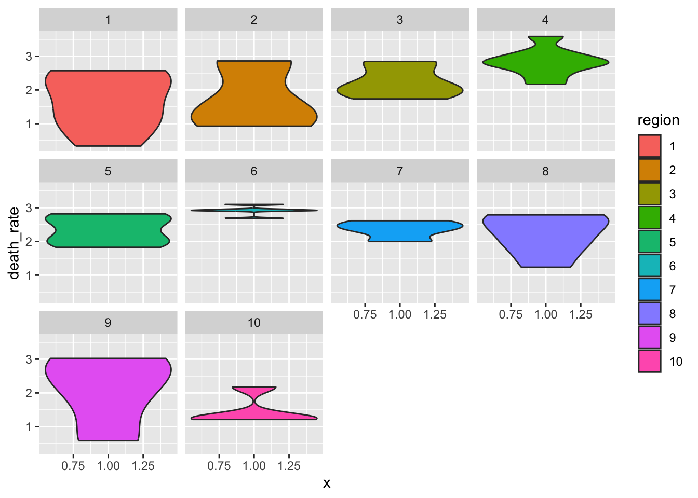
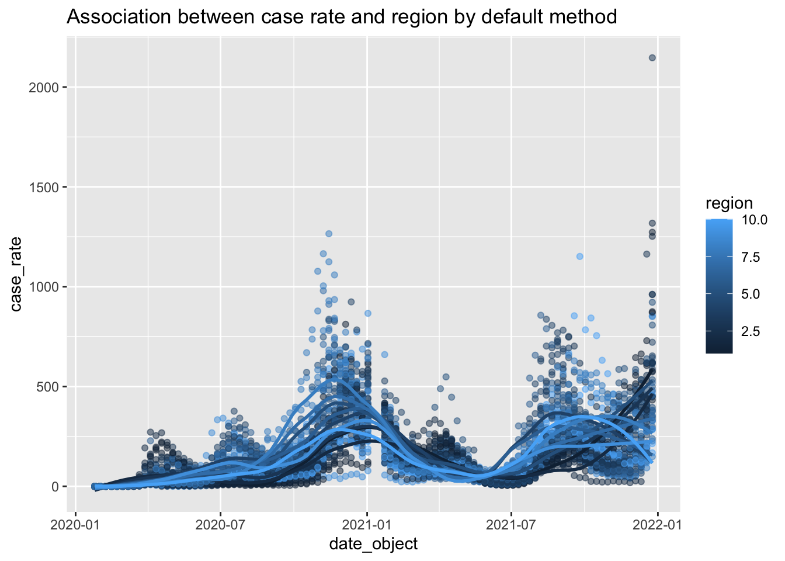
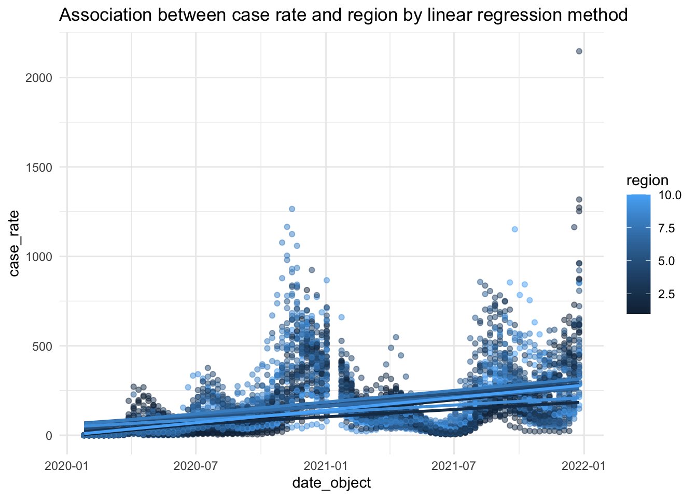
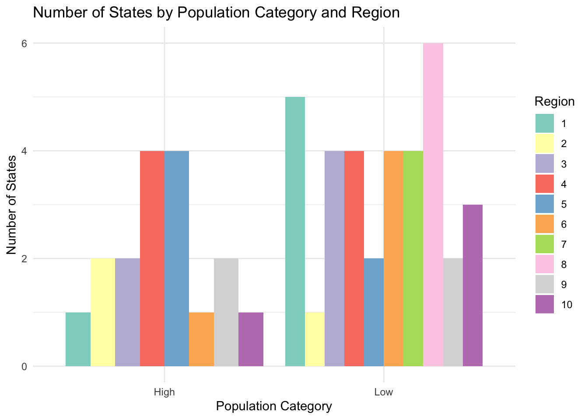
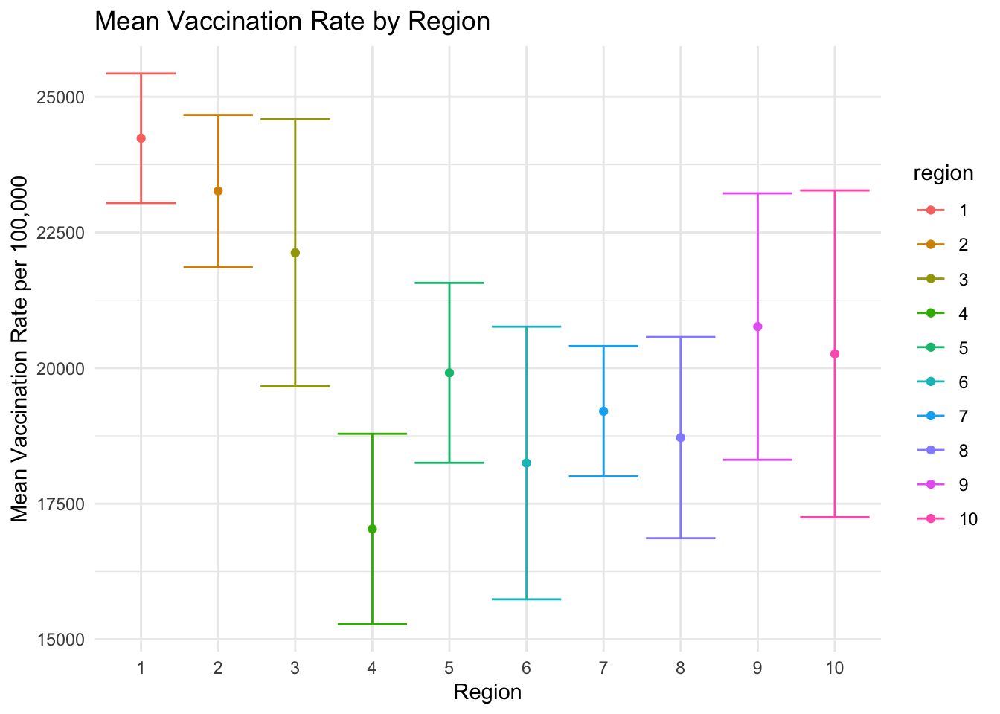
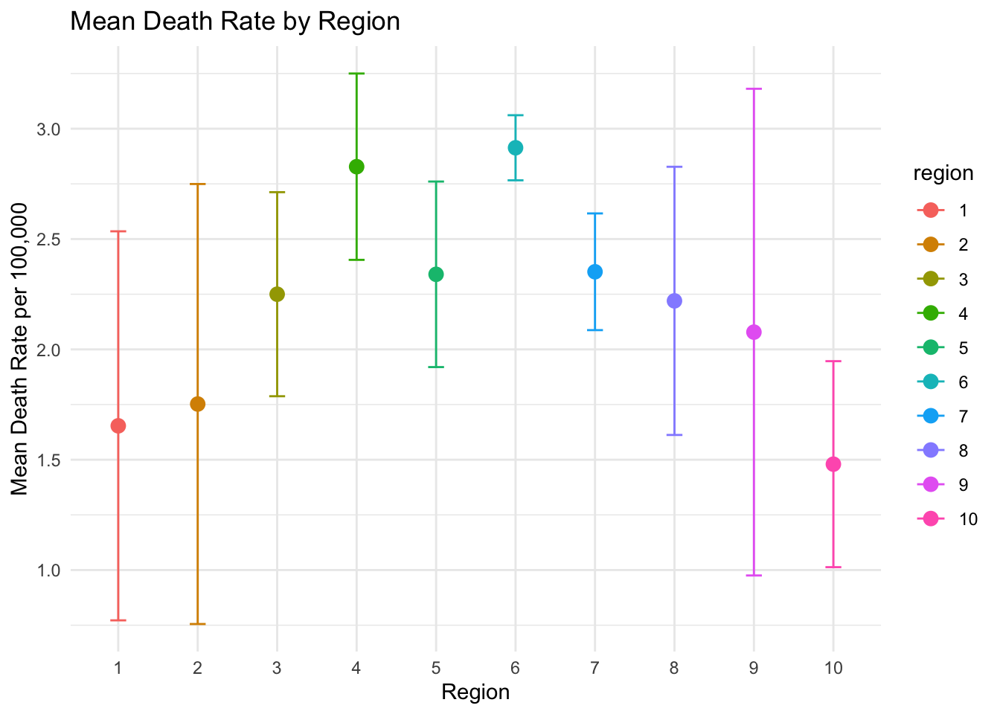
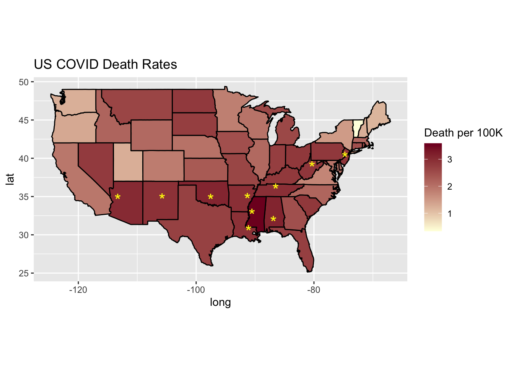

── Conflicts ────────────────────────────────────────── tidyverse_conflicts() ──
✖ dplyr::filter() masks stats::filter()
✖ dplyr::lag() masks stats::lag()
ℹ Use the conflicted package (<http://conflicted.r-lib.org/>) to force all conflicts to become errors
library(data.table)
Attaching package: 'data.table'
The following object is masked from 'package:purrr':
transpose
The following objects are masked from 'package:lubridate':
hour, isoweek, isoyear, mday, minute, month, quarter, second, wday,
week, yday, year
The following objects are masked from 'package:dplyr':
between, first, last
library(ggplot2)library(maps)
Attaching package: 'maps'
The following object is masked from 'package:purrr':
map
library(ggforce)
1. Read Data
if (!file.exists("covid_processed.csv"))download.file(url ="https://raw.githubusercontent.com/dmcable/BIOSTAT620W26/main/data/covid/covid_processed.csv",destfile ="covid_processed.csv",method ="libcurl",timeout =60 )covid <-read.csv("/Users/smartso/Documents/B620/BIOSTAT620labs/BIOSTAT620W26/Lab4/covid_processed.csv")head(covid)
X date mmwr_year mmwr_week state state_name pop region
1 1 2020-01-25 2020 4 AK Alaska 732441 10
2 2 2020-02-01 2020 5 AK Alaska 732441 10
3 3 2020-02-08 2020 6 AK Alaska 732441 10
4 4 2020-02-15 2020 7 AK Alaska 732441 10
5 5 2020-02-22 2020 8 AK Alaska 732441 10
6 6 2020-02-29 2020 9 AK Alaska 732441 10
region_name cases hosp booster series deaths
1 Pacific Northwest 0 0 0 0 0
2 Pacific Northwest 0 0 0 0 0
3 Pacific Northwest 0 0 0 0 0
4 Pacific Northwest 0 0 0 0 0
5 Pacific Northwest 0 0 0 0 0
6 Pacific Northwest 0 0 0 0 0
2. Prepare the data
# pop-normalization ("units cases per 100,000 population") and date_object by ymd()covid <-mutate(covid,case_rate = cases / pop *100000,hosp_rate = hosp / pop *100000,booster_rate = booster / pop *100000,series_rate = series / pop *100000,death_rate = deaths / pop *100000,date_object =ymd(date) )# Mean by statecovid_state_mean <-summarize(covid,case_rate =mean(case_rate, na.rm =TRUE),hosp_rate =mean(hosp_rate, na.rm =TRUE),booster_rate =mean(booster_rate, na.rm =TRUE),series_rate =mean(series_rate, na.rm =TRUE),death_rate =mean(death_rate, na.rm =TRUE),pop =first(pop),region =first(region),.by = (state_name) )#Logical variablecovid_state_mean$pop_cat <-ifelse(covid_state_mean$pop >mean(covid_state_mean$pop, na.rm =TRUE), "High", "Low")#Region is a factorcovid_state_mean <-mutate (covid_state_mean, region =as.factor(region))covid_state_mean
3. Use geom_violin - case rates and death rates by region
Overall, the violin plots of case rates by region show patterns similar to those of death rates. For case rates, Regions 4, 5, 6, 7, and 8 exhibit relatively narrow distributions with long upper tails, indicating that some states in these regions experienced particularly high case rates (exceeding 150 cases per 100,000 population). In contrast, Regions 1, 2, 3, 9, and 10 display broader distributions, suggesting greater variability in case rates across states. For death rates, Regions 4 and 6 stand out with higher central values and relatively low variability, indicating consistently high death rates across states within these regions.
ggplot(data = covid_state_mean) +geom_violin (mapping =aes(x =1, y = case_rate, fill = region)) +#labs (title = "Case Rates by Region")facet_wrap (~region)
ggplot(data = covid_state_mean) +geom_violin (mapping =aes(x =1, y = death_rate, fill = region)) +facet_wrap (~region)

4. Use geom_point with stat_smooth - the association between time and case rates by region
The scatterplot with smoothers reveals clear temporal trends in COVID-19 case rates, with repeated rises and falls. The LOESS smoother captures these nonlinear patterns more effectively than a linear model, which fails to represent the timing and magnitude of peaks. Regional differences are not clearly distinguishable; using distinct colors for each region rather than a gradient may improve regional comparison.
covid_ex2w <-filter(covid, mmwr_week >2 )ggplot(data = covid_ex2w) +aes(x = date_object, y = case_rate, color = region, group = region) +labs(title ="Association between case rate and region by default method") +geom_point (alpha =0.5) +stat_smooth(method ="loess", span =0.4, se =FALSE) # Without the loess method span doesn't work.
`geom_smooth()` using formula = 'y ~ x'

#theme_minimal()ggplot(data = covid_ex2w) +aes(x = date_object, y = case_rate, color = region, group = region) +labs(title ="Association between case rate and region by linear regression method") +geom_point (alpha =0.5) +stat_smooth(method ="lm", se =FALSE) +theme_minimal()
`geom_smooth()` using formula = 'y ~ x'

5. Use geom_bar - the states by population category colored by region
The barplot displays the number of states in each population category (high vs. low) by region. Regions 2 and 5 contain more high-population states, whereas most other regions have an equal or greater number of low-population states. The side-by-side bars and color coding for each region facilitate comparison across regions. However, a binary population category may be less informative for epidemiological analysis of COVID-19 than a population density–based classification.
ggplot(covid_state_mean, aes(x = pop_cat, fill = region)) +geom_bar(position ="dodge") +scale_fill_brewer(palette ="Set3") +# change colorslabs(x ="Population Category",y ="Number of States",title ="Number of States by Population Category and Region",fill ="Region" ) +theme_minimal()

6. Use stat_summary - mean vaccination rate and death rate by region with standard deviation error bars
Vaccination rates Vaccination rates are vary, and mean vaccination rates range from approximately 15,000 to 25,000 per 100,000 population across regions. Regions 1 and 2 show relatively high mean vaccination rates with low standard deviations, indicating similar vaccination coverage across states within these regions. In contrast, Region 4 where we previously identified as having high case and death rates has the lowest mean vaccination rate, suggesting weaker primary prevention compared with other regions. Interestingly, Region 5, which includes Michigan, shows relatively higher vaccination coverage compared with neighboring regions.
Death rates Death rates are less vary than vaccination rates and mean death rates range from approximately 1 to 3 per 100,000 population across regions. Overall, regional mean death rates show an inverse relationship with vaccination rates, highlighting the importance of vaccination as a primary prevention strategy. Although regions with higher vaccination coverage tend to have lower mean death rates, the wide standard deviation error bars indicate substantial variability between states, suggesting that factors beyond vaccination also influence mortality.
ggplot(covid_state_mean, aes(x = region, y = series_rate, color = region)) +stat_summary(fun.data ="mean_sdl", # mean +- SDfun.args =list(mult =1), # SD multiplier; Default is 2SD.geom ="point",#size = 3 # Default format ) +stat_summary(fun.data ="mean_sdl",fun.args =list(mult =1),geom ="errorbar",#width = 0.2 ) +labs(x ="Region",y ="Mean Vaccination Rate per 100,000",title ="Mean Vaccination Rate by Region" ) +theme_minimal()

ggplot(covid_state_mean, aes(x = region, y = death_rate, color = region)) +stat_summary(fun.data ="mean_sdl",fun.args =list(mult =1),geom ="point",size =3 ) +stat_summary(fun.data ="mean_sdl",fun.args =list(mult =1),geom ="errorbar",width =0.2 ) +labs(x ="Region",y ="Mean Death Rate per 100,000",title ="Mean Death Rate by Region" ) +theme_minimal()

7. A map showing the spatial trend in COVID deaths in the US
Observations COVID-19 death rates do not vary substantially across most U.S. states, with the notable exception of Vermont. As shown in the map, the majority of states have death rates between 1 and 3 per 100,000 population. A few states stand out, particularly Vermont and Mississippi. Vermont has the lowest death rate, while Mississippi has the highest, which is easily distinguishable by color.
Trend There is no strong or obvious geographic pattern in COVID-19 death rates across the United States. However, among the top 10 states with the highest death rates (marked with yellow stars), these states tend to be located more in the South than in the North and are more likely to be rural rather than highly urbanized. In addition, states on the West Coast generally exhibit relatively lower death rates.
# 1. Get US states map dataus_map <-map_data("state")# 2. Prepare your COVID data# Assumes 'covid_state_mean' exists with columns: 'state', 'death_rate'covid_state_mean <- covid_state_mean %>%mutate(state_lower =tolower(state_name))# 3. Merge map data with COVID datamap_covid <-left_join(us_map, covid_state_mean, by =c("region"="state_lower"))# 4. Identify top 10 states for labeling# We calculate the center of each state to know where to put the "*"state_centers <- us_map %>%group_by(region) %>%summarize(long =mean(long), lat =mean(lat))top10 <- covid_state_mean %>%arrange(desc(death_rate)) %>%slice_head(n =10) %>%left_join(state_centers, by =c("state_lower"="region"))# 5. Create the mapggplot(map_covid, aes(x = long, y = lat, group = group)) +# Polygon layer merged with COVID datageom_polygon(aes(fill = death_rate), color ="black") +# Add * labels for top 10 states# group = NULL is required here so it doesn't try to group by state polygongeom_text(data = top10, aes(x = long, y = lat, label ="*", group =NULL), color ="yellow", size =6,# vjust = 0.7 # Slight vertical adjustment to center the asterisk ) +# Custom color palettescale_fill_gradient(low ="lightyellow", high ="#800026", name ="Death per 100K", na.value ="grey90") +# Appropriate aspect ratiocoord_fixed(1.3) +# Labels#theme_void() + # Removes axes, background grid, and tickslabs(title ="US COVID Death Rates")

8. Use a ggplot extension
I used ggforce to plot death rates versus vaccination rates by region, with individual states represented as dots and grouped by regions with colors. This visualization shows the approximate association between vaccination coverage and death rates within each region, while also highlighting variability among states in a Region. Interestingly, within regions, differences in vaccination coverage did not consistently correspond to lower death rates; positive, negative, and negligible effects were all observed. However, when ignoring regional grouping, the overall trend across all states shows an inverse relationship between vaccination rates and death rates.
I separated #4 Time Series Graph and plotted case rates over time using the ggforce package. This visualization clearly highlights differences between regions, making regional trends more apparent than in the time series plots of ggplot2.
ggplot(covid_ex2w,aes(x = date_object,y = case_rate,color = region)) +geom_point(alpha =0.4) +stat_smooth(method ="loess", span =0.4, se =FALSE) +facet_wrap_paginate(~ region, scales ="free_y", ncol =3, nrow =4) +labs(title ="COVID-19 Case Rates Over Time by Region",x ="Date",y ="Case rate (per 100,000)",color ="Region" ) +theme_minimal()